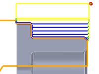
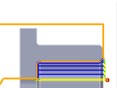

<div id="machineInside"><p>操作でワークピースの ID を加工するように指定します。</p>
<table class="tipTable" cellspacing="10">
<tr>
<td><center></center></td>
<td><center></center></td>
</tr><tr>
<td><center><p><b>無効</b></p></center></td>
<td><center><p><b>有効</b></p></center></td>
</tr></table>
<p><em>図は旋盤輪郭</em></p>
<p><b>注:</b> 通常、OD 旋盤工具からボーリング工具への切り替えも行うことになります。</p>
</div>